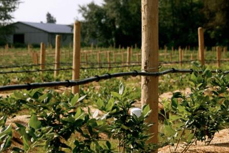

Bluberries
- Uzbekistan Russia
- Uzbekistan China
- Uzbekistan Korea
Indescribable taste
-
Weight 170g
Our products are sold in an average container for equal consumption and convenience for all
-
Supply Uzbekistan
We have purchased equipment and machinery to introduce the new technologies of intensive horticulture, raise fruit production and increase the yield of irrigated hectares.
-
Pollination by bees
The main feature of pollination of plants with the help of bees is that it is possible to eliminate the use of hormones for cultivation thanks to this pollination mechanism.
About
our blueberries
Our blueberry plants are delivered from Holland and are grown locally to ensure highest quality of the product and its variety. We have purchased equipment and machinery to introduce the new technologies of intensive horticulture, raise fruit production and increase the yield of irrigated hectares.
Our blueberry plants are delivered from Holland and are grown locally to ensure highest quality of the product and its variety. We have purchased equipment and machinery to introduce the new technologies of intensive horticulture, raise fruit production and increase the yield of irrigated hectares.
- 
Modern delivery & systematized logistics
Our garden, located in Central Asia, allows the continent supply of our product to two world’s largest blueberry markets such as China and Korea.
Our products get delivered in the most modern and safest environment. The recorded data is automatically scaled to the full schedule for timely reporting.
100% Natural
Our products can be distinguished by their natural composition and
beneficial properties for your body.
We do everything to grow our fruits with care for each sprout.
We do not use hormones or
harmful
substances in the cultivation of crops. Our goal is to produce a healthy product and deliver it intact
to
our customers
Innovative technologies
Thanks to the innovative technologies for climate control and
irrigation, our agricultural company saves resources of electricity consumption, reduces waste, and
allows you to free up the company’s potential.
We are responsible for producing fruits and
berries without using fruit growth and color stimulants. Our specialists carefully select fertilizers.
Using UV filters and osmosis for irrigation eliminates the risk of crop diseases.